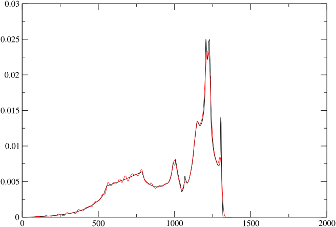

运行声子计算
CASTEP 包含了多种计算电子响应轨道和动力矩阵的方法（Refson, Tulip 和 Clark 2006）。存在实现限制，最适合的选择取决于计算类型、哈密顿量以及所需的性质计算。参见表格 [能力表] 详情请参见。对于简单的半局域密度泛函理论计算（LDA、PBE 等）， 密度泛函微扰理论方法 (DFPT) 方法更受青睐（章节） [dfpt-伽玛])，因为这不仅是最高效的方法，而且允许计算红外和拉曼强度，用于光谱建模。目前DFPT尚未实现用于超软赝势，或用于Hubbard U或某些包含色散校正的密度泛函理论方法（截至24.1版本），在这些情况下 有限位移 应使用的方法（第几节） [fd]). 如果需要态密度或沿高对称方向精细采样的能带曲线，则可以采用DFPT方法与 傅里叶插值 （节） [ddos]) 是最合适的或是 有限位移超胞 （节） [超胞]；如果需要使用超软赝势）。各种性质计算推荐方法的总结见表 [方法选择].
| DFPT（声子） | DFPT（电场） | FD（声子） | |
|---|---|---|---|
| USP | ✘ | ✘ | ✓ |
| NCP | ✓ | ✓ | ✓ |
| LDA，GGA | ✓ | ✓ | ✓ |
| MGGA | ✘ | ✘ | ✓ |
| DFT+U | ✘ | ✘ | ✓ |
| NCM/SOC | ✘ | ✘ | ✓ |
| PBE0，杂化交换关联功能 | ✘ | ✘ | ✓ |
| DFT+D：TS，D2 | ✓ | ✓ | ✓ |
| DFT+D：D3、D4、MBD*、XDM | ✘ | ✓ | ✓ |
- 表1： CASTEP 声子计算实现矩阵。通常，DFPT 对半局域 DFPT 是可用的，但对其他哈密顿量不可用。DFPT 与 USPs 的组合尚未实现。
| 目标性质 | 首选方法 |
|---|---|
| 红外光谱 | DFPT 在 q=0 时使用 NCP 势能 （节。） [dfpt-伽玛]) |
| FD 在 q=0 时使用 NCP 势和 DFPT 电场 （节。） [fd]) | |
| FD 在 q=0 时使用 USP 势和 Berry 相位 Z^{*} （节。） [berry-fd]) | |
| 拉曼光谱 | DFPT 在 q=0 时使用 NCP 势能（2n+1 定理） （节。） [拉曼]) |
| 有效电荷（Born）Z^{*}) | 使用NCP势的DFPT电场计算 （节。） [efield]) |
| FD 在 q=0 时使用 USP 势和 Berry 相位 Z^{*} （节。） [berry-fd]) | |
| 介电常数（\epsilon_\infty) | 使用NCP势的DFPT电场计算 （节。） [efield]) |
| 非线性光学极化率（\chi^{(2)}) | 使用NCP势的DFPT电场（2n+1定理） （节。） [非局域轨道]) |
| 声子色散或态密度 | DFPT 加入NCP势能的插值计算 （节。） [ddos]) |
| 使用 USP 或 NCP 势能进行 FD 加插值 （节。） [ndsc]) | |
| 使用 USP 或 NCP 势能的超胞 FD 计算 （节。） [超胞]) | |
| 振动热力学 | 与DOS相同 （节。） [热力学]) |
- 表2： 不同性质计算的可用且推荐的方法。
一个基于DFPT的声子计算在 \Gamma单点
许多建立和运行声子计算的基本原则，都可以通过最简单的情况来说明——在点处计算声子频率。 q=(0,0,0)，通常被称为的 \Gamma 点。这是非常常见的计算，因为它构成了红外或拉曼光谱以及群论分析和振动模式归属的基础。
输入文件
进行 CASTEP 声子计算的设置需要在文档中添加几个额外的关键字。 seedname.cell 文件。如同任何类型的计算一样，必须使用以下任一种方式指定晶胞 %block LATTICE_ABC 或者 %block LATTICE_CART，并使用原子坐标 %block POSITIONS_FRAC 或者 %block POSITIONS_ABS。图 [示例-伽马] 展示了在六方硫化物结构中硼氮化合物计算的完整输入文件。附加的关键字。 phonon_kpoint_list 用于指定计算一个声子波矢（0,0,0）1. 可以通过在此块中添加额外的行来指定更多的波矢。2
%block LATTICE_ABC
2.536000 2.536000 4.199000 ! a, b, c
90.000000 90.000000 120.000000 ! alpha, beta, gamma
%endblock LATTICE_ABC
%block POSITIONS_FRAC
B 2/3 1/3 0.000000 ! Atom co-ordinates in crystallographic
N 2/3 1/3 0.374536 ! fractional system.
B 1/3 2/3 0.500000
N 1/3 2/3 0.874536
%endblock POSITIONS_FRAC
%block SPECIES_POT
B B_00.recpot ! File names of pseudopotential to use for B
N N_00.recpot
%endblock SPECIES_POT
kpoints_mp_spacing 0.07 ! Generate MP grid of electronic k-points.
symmetry_generate ! Find symmetry operations of crystal structure
%block PHONON_KPOINT_LIST
0.0 0.0 0.0 1.0 ! Wavevector of phonon(s) to compute ( qx qy qz, weight)
%endblock PHONON_KPOINT_LIST
task : PHONON ! Choose a phonon calculation xc_functional : LDA opt_strategy : SPEED ! Optimise for speed over memory saving cut_off_energy : 700.0 eV ! Plane-wave cutoff for this system elec_method : DM ! Use fast DM solver even for insulating system phonon_sum_rule : TRUE ! Enforce acoustic sum rule on calculated D-
图1： 用于BN在钨青铜结构中的注释示例单元格和参数文件。请注意
phonon_method默认为DFPT.
读取输出
图 [示例-伽马输出] 展示了从计算中提取的部分与声子相关的输出内容 .castep 上一节输入文件运行所得的文件。输出包含多个部分，每个部分对应一个选定的方向。 {\mathbf{q}}\rightarrow 0 在LO-TO分裂项中。请注意，CASTEP已添加了一个没有LO-TO分裂的计算（第一个区块），即使这并未明确请求。每个区块中，频率以每行一条的形式列出。此外，在每一行上还包含：(a) 一个表示该模式从群论分析得出的不可约表示的标签，(b) 在粉末（或其他方向平均）红外实验中该模式计算出的吸收率，(c) 该模式是否为红外活性，(d) Raman活性（如果已计算），以及(e) 该模式是否为Raman活性。
============================================================================== + Vibrational Frequencies + + ----------------------- + + + + Performing frequency calculation at 1 wavevector (q-pt ) + + ========================================================================== + + + + -------------------------------------------------------------------------- + + q-pt= 1 ( 0.000000 0.000000 0.000000) 1.0000000000 + + -------------------------------------------------------------------------- + + Acoustic sum rule correction < 8.094974 cm-1 applied + + N Frequency irrep. ir intensity active raman active + + (cm-1) ((D/A)**2/amu) + + + + 1 -0.049170 a 0.0000000 N N + + 2 -0.034768 b 0.0000000 N N + + 3 -0.034768 b 0.0000000 N N + + 4 475.116083 c 0.0000000 N Y + + 5 475.116083 c 0.0000000 N Y + + 6 952.000075 c 0.0000000 N Y + + 7 952.000075 c 0.0000000 N Y + + 8 963.032787 d 0.0000000 N N + + 9 1016.312039 a 28.5895083 Y Y + + 10 1051.124801 b 25.8079204 Y Y + + 11 1051.124801 b 25.8079204 Y Y + + 12 1123.472590 d 0.0000000 N N + + .......................................................................... + + Character table from group theory analysis of eigenvectors + + Point Group = 25, C6v + + .......................................................................... + + Rep Mul | E 6 3 2 m_v m_v + + | ------------------------ + + a A1 2 | 1 1 1 1 1 1 + + b E1 2 | 2 1 -1 -2 0 0 + + c E2 2 | 2 -1 -1 2 0 0 + + d B1 2 | 1 -1 1 -1 -1 1 +-
图2 前一段输入文件生成的纤锌矿BN计算所输出的.castep文件中的内容。各列显示了模式频率、该模式不可约表示的字母标记、红外吸收率和拉曼活性，以及该模式是否具有拉曼和/或红外活性。根据对称性使用情况和输入选项的不同，并非每个计算都会包含所有这些信息。
+ -------------------------------------------------------------------------- +
+ q-pt= 1 ( 0.000000 0.000000 0.000000) 0.0000000000 +
+ q->0 along ( 0.000000 0.000000 1.000000) +
+ -------------------------------------------------------------------------- +
+ Acoustic sum rule correction < 8.094974 cm-1 applied +
+ N Frequency irrep. ir intensity active raman active +
+ (cm-1) ((D/A)**2/amu) +
+ +
+ 1 -0.037851 a 0.0000000 N N +
+ 2 -0.034768 b 0.0000000 N N +
+ 3 -0.034768 b 0.0000000 N N +
+ 4 475.116083 c 0.0000000 N Y +
+ 5 475.116083 c 0.0000000 N Y +
+ 6 952.000075 c 0.0000000 N Y +
+ 7 952.000075 c 0.0000000 N Y +
+ 8 963.032787 d 0.0000000 N N +
+ 9 1051.124801 b 25.8079204 Y Y +
+ 10 1051.124801 b 25.8079204 Y Y +
+ 11 1123.472590 d 0.0000000 N N +
+ 12 1262.933291 a 28.5895083 Y Y +
+ .......................................................................... +
+ Character table from group theory analysis of eigenvectors +
+ Point Group = 25, C6v +
+ (Due to LO/TO splitting this character table may not contain some symmetry +
+ operations of the full crystallographic point group. Additional +
+ representations may be also be present corresponding to split LO modes. +
+ A conventional analysis can be generated by specifying an additional null +
+ (all zero) field direction or one along any unique crystallographic axis +
+ in %BLOCK PHONON_GAMMA_DIRECTIONS in <seedname>.cell.) +
+ .......................................................................... +
+ Rep Mul | E 6 3 2 m_v m_v +
+ | ------------------------ +
+ a A1 2 | 1 1 1 1 1 1 +
+ b E1 2 | 2 1 -1 -2 0 0 +
+ c E2 2 | 2 -1 -1 2 0 0 +
+ d B1 2 | 1 -1 1 -1 -1 1 +
==============================================================================
图2 运行输出（续）：如果启用了LO-TO分裂计算，则 \Gamma 点频率表被重复，无论是包含还是不包含产生某一或多个方向LO/TO分裂的非解析贡献（见Gonze和Lee（Gonze 和 Lee，1997）。（对LO模式的群论分析不如预期那样有用，很可能将成为未来发展的主题。）
与其他计算相同，写入文件的信息量 .castep 文件由参数的值控制 iprint输出级别为
iprint : 0-
最小输出如图所示 [示例-伽马输出]. 无进度信息。
iprint : 1-
至于
iprint : 0但包括对q点和扰动的令人安心的进度报告。 iprint : 2-
更详细的输出内容，包括每次扰动中k点和对称性的详细信息，每个扰动循环的DFPT最小化器报告，以及动力矩阵（和力常数矩阵）的打印。
除了用户可读的输出内容在 .castep 文件3，每一次声子计算都会生成一个带有后缀的额外输出文件 .phonon 这是供其他程序进行后处理分析用的。这不仅包括频率，还包括本征矢。 {\mathbf{\varepsilon}_{m{\kappa,\alpha}{\mathbf{q}}}} 由对动力矩阵进行对角化得到的本征矢。这些本征矢是正交归一化的，本征矢与原子位移之间的关系由下式给出
其中 Q_M 是模的振幅 m 另一种表示方法如引言中所述。
拉曼活性计算
除了作为默认部分计算出的红外吸收率外， \Gamma点声子计算中，CASTEP 还能够在绝缘体系的非共振散射情况下计算拉曼活性张量。4. 该计算使用了DFPT的一种扩展形式，称为“2n+1定理”（Baroni 等人，2001年; Miwa 2011) 该计算需要的计算量远大于单纯的声子计算，因此默认情况下不会启用。要进行拉曼活性计算，请设置
calculate_raman : TRUE
在 .param 文件，用于计算并打印拉曼原子极化率张量和模式极化率张量至 .castep 文件。这些数据可在建模极化单晶几何结构中的拉曼散射时提取使用。5
如同声学有效电荷和动力矩阵一样，原子极化张量的取值存在一个求和关系，由于数值近似的原因，该关系可能无法很好地满足。如果参数
raman_sum_rule : TRUE
已设置。
三维平均拉曼活性（见Porezag和Pedersen（Porezag 和 Pederson 1996)) 是从磁化率张量计算得出，并作为通常频率输出中的一列额外打印出来，如图所示 [示例-伽马输出]. 这可以用于对粉末谱进行简单的建模，例如使用 dos.pl 工具（参见章节） [态密度-PL]).
色散关系和态密度
波矢不为零的声子在晶体固体的热物理性质以及许多固态相变的物理过程中起着重要作用。通过全布里渊区内的振动计算来验证晶体结构的机械稳定性，需要检测实频。此外，通常还需要获得色散曲线和态密度，以便与非弹性中子和X射线散射实验结果进行比较。
密度泛函微扰理论的一个优势是，CASTEP可以在 {\mathbf{q}}\ne \mathbf{0} 像在……一样容易 {\mathbf{q}}= \mathbf{0} （但会因对称性降低而导致CPU时间增加）。可以通过提供布里渊区中q点的列表来直接执行此计算。 .cell 文件（使用其中一个块） %block PHONON_KPOINT_LIST，或 %block PHONON_KPOINT_PATH 或者关键字 phonon_kpoint_mp_grid）。然而，要生成一个合理的能带图或态密度，通常需要数百甚至数千个q点。此类计算所需的时间将是单点能计算的几百倍，因此是不可行的。
幸运的是，有一种方法可以在远更低的计算成本下实现相同的结果。该方法利用了固体中原子间相互作用具有有限范围且迅速衰减至零这一事实。具体而言，方程中的力常数矩阵元素有如下特点： [fcmat] 随着减少 1 / r^{5} 具有原子间距离。因此，由公式定义的动力矩阵为。 [dmat] 及其本征值 \omega^{2}({\mathbf{q}}) 随波矢平滑变化 {\mathbf{q}}使用傅里叶插值法，可以从一组在较粗网格上的DFPT计算结果中生成倒易空间中任意精细网格或线性路径上的动力矩阵。有关该方法的完整描述，请参见参考文献（Baroni 等人，2001年; Giannozzi 等人，1991年; Gonze 和 Lee，1997).
在极性固体的情况下会出现一个问题，即当一个原子被位移时所产生的偶极-偶极相互作用会导致一个更远距离的力常数矩阵，其衰减仅遵循 1 / r^{3}. CASTEP 采用本征有效电荷和通过电场响应的DFPT计算得到的介电常数对这一项进行解析建模（参见第节） [efield] 并参考文献（Gonze 和 Lee，1997）。因此，它只能对力常数矩阵中随……变化的部分进行傅里叶插值。 1 / r^{5}，且不需要比非极性固体情况更细的网格。
设置插值计算
在 .cell 文件选择粗网格点处进行DFPT计算的q点。这可以指定为一个 %block PHONON_KPOINT_LIST 包含不可约布里渊区中的简化点集，但通常更直接的方法是使用替代关键字
phonon_kpoint_mp_grid: p q r
phonon_kpoint_mp_offset:INCLUDE_GAMMA
以指定网格参数和偏移量6网格参数 p, q 并且 r 通常应选择以实现倒易空间的均匀采样为目标，同时考虑倒易晶格矢量的长度，并且需与模拟单元的对称性相容。或者，也可以使用最小间距指定网格，例如
phonon_kpoint_mp_grid_spacing 0.1 1/ang
通常，网格应选择以包含 \Gamma 点，通常能提供更好的插值收敛性（即在更小的 p,q,r）优于其他情况。这是与电子k点采样行为相反的情况（见参考文献（Probert 和 Payne，2003)). 特殊关键字值 phonon_kpoint_mp_offset : INCLUDE_GAMMA 避免了显式计算偏移量的需要。
网格参数的选择 p, q 并且 r 由三个因素决定：
-
对于一个三维晶体， p,q,r 应遵守晶体学对称性，因此对于立方或菱方晶系，你应该设置 p = q = r在单轴晶体（如四方或六方晶体）的情况下，我们有 p = q \neq r （假设 rằng） c 是唯一轴时）；对于对称性较低的情况则无此约束。
-
任意方向上的值限制了 力常数矩阵的范围 以与有限差分/超胞计算中超胞倍乘因子相同的方式（第节） [超胞]）。这个值应有多大取决于化学键的性质。离子键合体系通常具有较短程的力常数矩阵，需要相对粗略的网格才能收敛。对于岩盐结构的氯化钠，其原始晶格参数为3.75 Å的情况， 4 \times 4 \times 4 网格与收敛相当接近。这对应于将力常数矩阵在约距离处截断。 7Å (\approx p \times 2 \pi / a另一方面，共价体系往往具有相当长程的力常数矩阵，需要更精细的网格才能实现收敛。硅就是一个很好的例子。原始晶格参数与氯化钠相似于 3.81Å，但直到达到某个程度时，能带曲线才完全收敛。 8 \times 8 \times 8 使用了网格。关于这一点的更详细分析可参见参考文献（Ackland, Warren, 和 Clark 1997).
-
虽然网格尺寸在声子之间没有本质的物理关系。 {\mathbf{q}}点，并且用于电子 {\mathbf{k}}单点采样 7，由于实施密度泛函微扰理论以及需要在同时包含的网格上生成和使用基态Kohn-Sham波函数，从而产生了一种技术联系。 \{{\mathbf{k}}\} 并且 \{{\mathbf{k}}+ {\mathbf{q}}\} （参见参考文献（Gonze 1997) 详见数学细节）。为获得 DFPT 计算的最佳性能和稳定性， 声子 网格参数应为 共格的 与 电子的 网格具有精确的除数作为最简单的情况。例如，在具有hcp结构的元素金属如Mg中，电子 {\mathbf{k}}单点采样 of 21 \times 21 \times 12 以及一个声子 {\mathbf{q}}单点采样 of 7 \times 7 \times 6 这可能是最有效的做法。这不是一个严格的要求，CASTEP 会尝试使用所指定的网格进行计算，但在某些情况下，将其中一个网格向上取整以满足可协调性标准可能会带来性能优势。
额外的关键字在 .param 文件控制插值。最重要的是
phonon_fine_method : INTERPOLATE
指令 CASTEP 执行 DFPT 计算后的傅里叶插值步骤。
波矢插值的目标集合是通过在中添加额外的关键字或区块来设置的。 .细胞 文件。要么
phonon_fine_kpoint_mp_gridp q r
phonon_fine_kpoint_mp_offseto_1 o_2 o_3
或者
phonon_fine_kpoint_mp_spacing 0.03 1/ang.
将对一个规则的（可能偏移的）网格进行插值。实际上，仅包含布里渊区不可约楔形区域内的点，并计算适当的权重，使得加权平均值与对布里渊区的均匀采样相同。这是计算声子态密度的常用方法。
如果需要获取沿高对称方向的一组色散曲线，则需使用空单元关键词块
%block PHONON_FINE_KPOINT_PATH
%endblock PHONON_FINE_KPOINT_PATH
将内部生成一个列表的 {\mathbf{q}}- 点采样根据计算的对称性通过布里渊区的默认路径。或者使用一个点列表 {\mathbf{q}}- 显式指定路径顶点的点可输入为
穿越顶点之间指定方向的路径，除非存在以下情况 break 关键词用于路径跳跃且不包含任何中间点。路径上采样的精细程度由一个附加关键词设定。
phonon_fine_kpoint_path_spacing : 0.03 1/ang.
作为一种最终选择，可以直接输入一个点的简单列表，以使用指定的采样来建模
这是用于由 Accelrys Materials Studio 生成的文件的方法。
相同的关键词也被用于相关的有限差分计算方法；参见示例 .cell 图的文件 [al-sc-cell].
续接
CASTEP 存储所有声子计算的结果——动力学矩阵和力常数矩阵——在二进制文件中。 seedname.check 该文件在成功运行结束后生成。它可以用来修改与插值相关的某些参数值，甚至可以更改或完全替换精细声子k点集。 没有 是否需要重复昂贵的DFPT（或超胞）部分计算。事实上，只需进行一次力常数矩阵的计算，即可在多种采样密度下计算态密度，并获得任意平滑的色散曲线。
设置续算计算很简单。只需像平常一样，在参数文件的副本中添加续算关键字即可。
continuation原种子名称.check
并修改副本中的细声子k点采样参数 seedname.cell 文件。建议您使用重命名的副本进行操作，以避免覆盖原始且重要的文件。 seedname.check 文件。在新的输入文件集上运行CASTEP，与运行一个新的计算完全相同，只是结果将生成得快得多。
在设置续算运行时，应注意不要更改标准声子k点集、电子k点集或任何电子结构参数，如 elec_energy_tol如果检测到与检查点文件中存储值的不匹配，CASTEP 将丢弃保存的动力学矩阵数据，并从头开始重新计算。
续算计算也与之结合使用。 检查点 其中，当部分完成的计算被写入一个文件时，该文件也将在 .check 格式，并可用于续算中断的计算。参见章节 [检查点] 用于描述。
插值方案的控制
由动力矩阵导出的力常数矩阵的最终表示实际上是一种周期性表示，它等价于 {\mathbf{q}}=0 动力矩阵的一个（虚构的） p \times q \times r 超胞。（参见章节） [超胞] （有关更详细的说明）。CASTEP 必须利用离子位点对的最小像约定，确定周期动力学矩阵与非周期力常数矩阵之间的映射关系，并在实空间中引入截断方案以排除（超胞-）周期性图像。事实上，CASTEP 实现了两种不同的方案。
累积量方案（Parlinski, Li, 和 Kawazoe 1997) 包含所有图像力常数，并通过适当的加权以避免对图像的重复计数。这是通过在任一方向上，若图像力常数位于虚构超胞晶格最近周期重复距离的一半范围内，则将其包含进来实现的。如果原子-原子矢量位于 完全地 将超胞重复的一半，使得力常数在两个位置出现，例如在两者之间 \mathbf{L} 并且 -\mathbf{L}，所有处于相同距离的图像均以适当的权重因子包含在内，以保持累积力常数矩阵的对称性。（参见参考文献（Parlinski, Li, 和 Kawazoe 1997) 和 (叶等，2004年) 以获取更详细的说明）。该方案通过指定参数文件关键字来选择
phonon_fine_cutoff_method CUMULANT
且事实上是CASTEP中的默认方法。
CASTEP 也实现了简单的球形截断，由参数控制 R_c 并由参数指定
phonon_force_constant_cutoff 10.0 ang
该值 R_c 应被选择以满足 2 R_c < min(p L_1,q L_2,r L_3) L 其中 L_n 是模拟单元的晶胞边长，并 p,q,r 是声子波矢的（粗略）网格。通常最简单的方法是指定零值，此时CASTEP会自动选择最大的允许值。该方案最适合立方对称性的体材料。使用关键字选择球形方案。
phonon_fine_cutoff_method SPHERICAL.
在默认方法中，可以通过半径缩放因子减小较小的截断体积。 e.g.
phonon_force_constant_cut_scale : 1.0.
这可能有助于测试IFC矩阵中长程贡献的影响。然而，该参数值偏离1时，将无法保持累积方案的优良收敛特性，通常需要比精确累积方法更大的超胞。
声学求和规则修正
振动哈密顿量在系统空间均匀平移下保持不变。这一对称性是众所周知结果的来源：任何晶体都有三个声学振动模式，位于 {\mathbf{q}}=0 零频率的情况。这导致所谓的 声学求和规则 （或 ASR）（Ackland, Warren, 和 Clark 1997; Pick, Cohen 和 Martin 1970) 其中包含力常数的数学表达式和 \Gamma一阶动力矩阵
在平面波计算中，由于原子相对于固定的FFT网格发生平移，因而破坏了平移不变性，因此求和规则永远不会被严格满足。因此，即使在其他方面看起来已经非常收敛的计算中，有时也会观察到三个声学模式在 \Gamma 显著偏离零频率。取决于XC泛函8 这些频率可能达到或超过50 cm⁻¹。^{\text{-1}}一种解决方案就是简单地增加 CASTEP 中用于密度和势场的“细网格”FFT 网格的点数。 fine_grid_scale9。（注意：这与 grid_scale （这控制了用于表示波函数的FFT网格。）然而，这样操作在计算机时间和内存消耗上可能非常昂贵。
只要对称性破坏的幅度不大，就可以对计算得到的动力学或力常数矩阵进行变换，使其精确满足ASR（对称性自洽关系）。CASTEP实现了一种方案，该方案将声学模式本征矢投影出去，并将其频率调整为零，同时对光学模式频率的影响最小。该方案由参数控制（在 .param 文件)
phonon_sum_rule_method : REAL / RECIP / REAL-RECIP / NONE
其中第一个只是激活或禁用该修正项。第二个选项选择方程中ASR变体的哪一个版本。 [asr] 为了施加约束，可以使用实空间力常数矩阵、倒空间动力学矩阵，或两者兼有。（phonon_sum_rule_method : NONE 是……的同义词 phonon_sum_rule : FALSE). 实空间方法仅适用于插值或超胞/有限位移计算，而倒空间方法可用于任何类型的声子计算。
两种变体都会使声学模式频率偏离但接近 {\mathbf{q}}=0，实空间方法隐式地，而倒易空间方法显式地，通过确定校正项 {D^{\kappa,\kappa^\prime}_{\alpha,\alpha^\prime}(\mathbf{q}=0)} 并将其从 {D^{\kappa,\kappa^\prime}_{\alpha,\alpha^\prime}(\mathbf{q})} 如 Gonze 所建议的（Gonze 和 Lee，1997）。这通常会导致声学模式行为，其特征与使用非常精细的FFT网格进行的高收敛计算无法区分。10.
除了频率上的和规则之外，还有另一个关于Born有效电荷的规则（见第几节） [efield])
哪个由参数激活
born_charge_sum_rule : TRUE
CASTEP 的默认行为是不强制执行任一求和规则。如果在原始计算中未请求此功能，则可以在后续处理中通过续算运行添加，具体见章节 [续]仅在检查点文件中存储原始的动力学和/或力常数矩阵 没有 ASR 的强制执行仅在输出阶段生效。因此，该效果可以被关闭，也可以通过后处理计算进行修改，或者重新开启。
态密度
声子态密度的定义需要对计算得到的频率进行积分。 \omega_{i{\mathbf{q}}} 在布里渊区范围内
一个简单的计算近似方法是计算 \omega_{i{\mathbf{q}}} 在一个规则的离散网格上 {\mathbf{q}}，将积分替换为网格上的求和，并将结果与某种峰形函数卷积 h(\omega) 例如高斯函数
在 CASTEP 工具集中的实现方式是通过在适当精细的网格上执行傅里叶插值计算来完成的。 {\mathbf{q}}点集，指定either phonon_fine_kpoint_mp_grid 或者 phonon_fine_kpoint_mp_spacing得到的结果 .phonon 文件随后可以使用该工具进行分析。 dos.pl 工具（见第几节） [态密度-PL]），该工具实现了方程 [拓宽能带].
然而，展宽会抹平态密度曲线中的任何尖锐特征，并无法再现理论态密度所典型的平滑曲线或尖锐峰值部分。这一问题在参考文献（Yates 等人，2007年) 和 (Pickard 1997). 一种更忠实的呈现方式可能是使用所谓的 自适应展宽 Yates 等人提出的方法（Yates 等人，2007年) 采用的 梯度 对声子支分散布的展宽进行窄化或扩大，分别对应平坦或陡峭的分支。该功能通过参数关键字激活。
phonon_calculate_dos : TRUE
在计算的傅里叶插值阶段，计算自适应展宽的态密度，并写入一个名为的输出文件 <seedname>.phonon_dos 包含表格化的态密度，以及额外列中的按原子种类分辨的态密度。The dos.pl 脚本能够读取并展示 .phonon_dos 文件同样如... .phonon.
范围和分辨率可以使用额外参数进行修改，例如
phonon_dos_spacing : 0.01 THz
phonon_dos_limit : 10.0 THz
金刚石声子的示例输出如图所示 [c2-pdos].

-
图3 金刚石的声子态密度，带有一个 18^3 细网格下高斯展宽（红色）与自适应展宽（黑色）方法的对比。在高斯展宽情况下，明显可见人为的振荡现象，且尖锐峰的峰值高度未能得到良好再现。
有限位移
除了使用DFPT方法计算力常数外，CASTEP还实现了基于在原子偏离其平衡位置一小段距离时对力进行数值微分的方案。该方法在DFPT尚未实现的情况下非常有用，而截至CASTEP 24.1版本，已包含超软赝势、Hubbard U项、精确交换和杂化泛函，以及部分新型色散修正方案。
该方案有三种变体。
原胞有限位移
选择了基本的有限位移方法，通过设置参数
phonon_method : FINITEDISPLACEMENT
与DFPT不同，这些位移必然与模拟单元周期性相关，因此只有 {\mathbf{q}}=0 声子与这一条件相容。如同在DFPT晶格动力学情况下，声子波矢由 %block PHONON_KPOINT_LIST, %block PHONON_KPOINT_PATH 或者 phonon_kpoint_mp_grid 在 .cell 文件但仅是 \Gamma 点， (0,0,0) 是有意义的。CASTEP将在输出文件中打印一条警告，并忽略列表中的任何非零值。
CASTEP 通过将每个原子移动一小段距离，然后对扰动后的构型进行自洽场（SCF）计算以评估作用在该构型上的力。在每个方向上均进行正负两种位移，从而利用数值微分中的“中心差分”方法准确求得相应的力常数。
方程 [有限差分] 表明，一次位移计算即可得到动力矩阵的一整行。与DFPT计算类似，仅进行最小集合的扰动，并利用空间群对称性构建完整的动力矩阵。
对扰动构型的自洽场（SCF）计算非常高效，通常在 CASTEP 5.0 或更高版本中仅需几个循环。这种效率是通过以下两步实现的：首先，基于未扰动系统的基态，对扰动系统的电子密度做出一个良好的初值估计，并对所讨论伪原子的原子类密度施加位移；其次，使用未扰动状态的 Kohn-Sham 轨道作为扰动构型初始猜测来启动 SCF 计算。要充分利用这种效率，必须采用密度混合（Davidson）最小化方法，该方法通过 elec_method : DM 在 .param 文件。（由于全带方法没有初始化密度的手段）。
使用的默认位移为 0.01 bohr 这可以在必要时通过设置参数来更改，
phonon_finite_disp : 0.02 ang
在 .param 文件。除上述讨论的差异外，输入和输出格式与DFPT计算相同。
本征电荷、介电常数以及LO/TO分裂与FD
声子计算在原子位移响应DFPT未实现的情况下很有用，尤其适用于超软赝势（USPs）以及包含LDA+U、自旋轨道耦合（SOC）、杂化泛函的后DFT交换和相关项（见表）。 [能力表]）。然而，包括红外光谱强度、LO/TO分裂以及动力学矩阵傅里叶插值有效性的性质，都依赖于布伦特有效电荷和介电常数（见第几节） [efield])，其通过电场响应DFPT方法计算未实现。
在某些情况下，可能方便读取外部计算或近似得到的布伦特电荷和介电常数值，用于计算红外谱、洛伦兹-汤普森分裂等。例如，使用DFT+U、meta-GGA或杂化方法的计算可能会采用基于PBE-DFPT和NCPs计算出的值作为合理近似，甚至可能使用不同DFT代码计算得到的值。
这可以通过指定一个包含值（在此情况下）的外部文件名称来实现。 BORN.DAT) 在 .param 文件
该文件应按照 Phonopy 代码的格式进行格式化（https://phonopy.github.io/phonopy/input-files.html#born-optional）。此类文件格式可在DFT、NCP电场响应计算的末尾生成。
本征电荷来自贝里相位极化
从 CASTEP 25.1 版本开始，将可以通过贝瑞相位极化量的有限差分数值微分来计算生效应电荷（但不计算介电常数）。该功能作为有限差分声子计算的附加功能，在进行包含 USPs 的有限差分声子计算时会自动启用。此方法适用于任何兼容的哈密顿量，包括 DFT+U、rSCAN 等 mGGAs 以及混合 XC 函数。
使用非对角超胞的有限位移方法
与DFPT方法类似，使用有限位移法计算声子色散关系和密度态（DOS）是通过动力矩阵的傅里叶插值实现的。首先，对完整的力常数矩阵进行近似处理。 {\Phi^{\kappa,\kappa^\prime}_{\alpha,\alpha^\prime}} 是通过显式计算一组 {D^{\kappa,\kappa^\prime}_{\alpha,\alpha^\prime}(\mathbf{q})} 与 {\mathbf{q}} 对一个粗网格进行采样 {\mathbf{q}} 并使用逆傅里叶关系式到方程 [dmat]。然后方程 [dmat] 用于生成所有（精细）声子波矢对应的动力矩阵。
计算的每一步关键步骤是 {D^{\kappa,\kappa^\prime}_{\alpha,\alpha^\prime}(\mathbf{q})} 在“粗略”的规则网格上是通过构建与每个粗网格相容的超胞列表来实现的。 {\mathbf{q}}点依次（因此） {\mathbf{q}}\cdot T_{\text{SC}} = 2 n \pi 其中 T_{\text{SC}} 是该超胞的晶格矢量）。此 {\mathbf{q}} 映射到一个 \Gamma 在与原胞不一致的情况下，对相应的超胞进行点计算， {D^{\kappa,\kappa^\prime}_{\alpha,\alpha^\prime}(\mathbf{q})} 对于原胞在 {\mathbf{q}} 可使用方程提取 [dmat]. Lloyd-Williams 和 Monserrat 已经证明了（Lloyd-Williams 和 Monserrat 2015) 通过使用所谓的非对角超胞，这样的集合只需包含粗网格划分的最小公倍数（p, q, r）。因此需要进行的独特超胞计算数量远少于 {\mathbf{q}}网格的矢量，最重要的是其随网格的线性尺寸增加而增加，而非随网格尺寸乘积增加。
通过设置参数来选择非对角超胞计算
phonon_method : FINITEDISPLACEMENT
phonon_fine_method : INTERPOLATE,
单元格关键字
phonon_kpoint_mp_grid : p q r
以及其中一个规格为 phonon_fine_kpoints 与DFPT计算情况完全相同。当声子计算开始时，CASTEP会使用Lloyd-Williams和Monserrat提出的算法生成超胞列表（supercell）。Lloyd-Williams 和 Monserrat 2015）。对于每种情况，CASTEP 会生成相应的超胞，并执行有限位移声子计算。动力矩阵 {D^{\kappa,\kappa^\prime}_{\alpha,\alpha^\prime}(\mathbf{q})} 然后为每个提取 {\mathbf{q}} 在粗略的KPOINT网格上，计算过程完全等同于使用DFPT方法的情况。
粗粒的选择 {\mathbf{q}}由——点采样集由 phonon_kpoint_mp_grid 与DFPT情况相比，需要额外考虑一个因素才能获得最佳计算性能。Lloyd Williams和Monserrat提出的超胞生成算法保证了所生成列表中最大的超胞包含 N_\text{SC} = \text{LCM} (p, q, r) 原胞的复制。例如，一个 4 \times 4 \times 4 对立方晶胞的采样得到 N_\text{SC} = 4。然而一个 2 \times 3 \times 4 对正交原胞的采样得到 N_\text{SC} = 12，4 和 3 的最小公倍数。在这种情况下，使用一个 2 \times 4
\times 4 采样，这只需要 N_\text{SC} = 8 对于所生成的最大超胞。
同样地， {\mathbf{q}}点采样，FD插值计算还需要一个额外的参数选择，即选择 电子的 超胞计算中的k点采样。这最方便地可通过cell关键字设置。
supercell_kpoint_mp_spacing : 0.1 1/ang.
显式设置网格采样划分与 supercell_kpoint_mp_grid 该选择将不恰当，因为每个超胞的正确选择都可能不同，且在运行时才变得明确。默认情况下，CASTEP 会选择一种与原胞间距一致的默认间距，以期在不同超胞之间实现收敛水平的一致性。
除了上述两点考虑之外，FD插值的设置与执行与DFPT完全相同。特别是求和规则、态密度以及热力学计算和插值方案的调整均完全一致。
传统有限位移/超胞
原始单元有限位移方法的局限性 {\mathbf{q}}=0 也可能通过将该方法与超胞的使用相结合来克服。这种方法有时也被称为“直接法”。Kunc 和 Martin 1982，第19.2节) 基于力常数矩阵随原子间距的短程衰减，并假设当间距大于某个值时，力常数为零。 R_c 可以忽略不计，并可视为零。可以构建一个超胞以包含一个半径为的虚设球体。 R_c 在此之后，力常数可以被忽略。然后的 动力矩阵 满足超胞的条件 L > 2 R_{c} 与……相同 力常数矩阵, i.e. {C^{\kappa,\kappa^\prime}_{\alpha,\alpha^\prime}(\mathbf{q}=0)}= {\Phi^{\kappa,\kappa^\prime}_{\alpha,\alpha^\prime}}因此，对力常数矩阵的完整知识，在合理近似下可由一次计算得出 {\mathbf{q}}=0 超胞包含多个原胞的动态矩阵。由此组力常数，可利用方程计算任意声子波矢处的动态矩阵。 [dmat] 完全如同插值计算中所使用的方式一样。
注意： 该方法大多已被第节中的非对角超胞/有限位移方法所取代。 [ndsc]该方法可等效地计算力常数矩阵，通常计算成本更低，因为其随单元体积的扩展具有更好的可缩放性。
%block LATTICE_CART 0 2.02475 2.02475 2.02475 0 2.02475 2.02475 2.02475 0 %endblock LATTICE_CART %block POSITIONS_ABS Al 0 0 0 %endblock POSITIONS_ABS %block SPECIES_POT Al Al_00.usp %endblock SPECIES_POT kpoint_mp_grid 14 14 14 supercell_kpoint_mp_grid 2 2 2 symmetry_generate %block PHONON_FINE_KPOINT_PATH 0.0 0.0 0.0 0.5 0.5 0.0 1.0 1.0 1.0 0.5 0.5 0.5 0.5 0.5 0.0 0.5 0.75 0.25 0.5 0.5 0.5 %endblock PHONON_FINE_KPOINT_PATH %block PHONON_SUPERCELL_MATRIX -3 3 3 3 -3 3 3 3 -3 %endblock PHONON_SUPERCELL_MATRIX-
图4 铝超胞声子计算的示例单元格文件。该计算沿高对称方向得到一组色散曲线。需要注意的是，该计算在超胞尺寸上尚未完全收敛——当将超胞矩阵元素从3增加到4时，部分分支的频率出现了明显变化。
task : PHONON phonon_fine_method : SUPERCELL phonon_calc_lo_to_splitting : FALSE phonon_sum_rule : TRUE calculate_born_charges : FALSE phonon_force_constant_ellipsoid : 1.0 cut_off_energy : 150 eV elec_method : DM smearing_width : 0.04 eV nextra_bands : 4 spin_polarized : FALSE opt_strategy : SPEED num_dump_cycles : 0 xc_functional : LDA-
图5 铝超胞声子计算的示例参数文件。严格来说，关闭LO/TO分裂计算并不是必需的——CASTEP会警告该操作不可行，并自动将其关闭。对于面心立方结构的铝，明确请求非自旋极化计算是必要的，因为CASTEP默认选择自旋极化，这是由于其电子数为奇数所致。
在 CASTEP 计算中，必须选择超胞并明确指定在输入文件中。它由一个矩阵定义，该矩阵乘以普通模拟单元的矢量，并以如下方式指定： 3\times3 矩阵在的 .cell 格式为的文件
这个典型例子使用对角矩阵在每个晶格矢量方向上创建了一个超胞 a, b 并且 c 因子为4。
用于声子计算的超胞需要谨慎选择。
-
它必须足够大，以容纳一个半径为 R_c，力常数矩阵的典型范围。在简单金属中，一个值为 R_c 即使小至6Å也可能足够，但对于更复杂和有序的体系，则需要更大的值。11在共价半导体中，所需 R_c 可能为10Å或更大。
-
然而，超胞可能会迅速增大，从而产生非常庞大的计算任务。例如一个 4 \times 4 \times 4 一个仅含两个原子的原胞超胞也包含128个原子。因此，这种方法在单处理器或台式计算机上很少可行，通常需要大量的并行计算资源。
-
该 形状 超胞的形状通常应尽可能接近立方体，无论原胞的形状如何，以优化超胞尺寸/R_c 比例。这可以通过使用对角线外的超胞矩阵来实现，如图中的示例输入文件所示。 [al-sc-cell] 其中，一个包含108个原子的立方超胞（cubic supercell）中3 \times 4 = 12 （晶胞）由含一个原子的铝菱方原胞生成。
-
如果体系具有高度各向异性，例如表面的层状模型，则显然一个均匀的超胞并不合适，必须根据模型的具体性质来设计合适的超胞。
超胞计算中电子布里渊区积分采用特殊k点法，该方法在文件中指定。cell 文件使用一组独立但与原胞采样相关的关键词进行描述。具体而言，
-
%block SUPERCELL_KPOINT_LIST允许精确指定k点和权重 -
supercell_kpoint_mp_grid_spacing d选择具有指定间距的Monkhorst-Pack网格。 -
supercell_kpoint_mp_grid p q r（并可选地）supercell_kpoint_mp_offset) 可以精确指定一个 Monkhorst-Pack 网格。 -
最后，如果未给出超胞k点关键字或块，则会选取一个网格，以产生与原胞计算相似的采样密度。
一旦使用超胞计算出力常数矩阵后，晶格动力学的其余部分将与傅里叶插值计算的情况完全相同。控制插值方案和截断半径、精细声子k点集以及声学求和规则实施的关键词，其工作方式也完全一致。详见第节 [插值设置] 详情请参见。
收敛性
声子和介电响应计算除了地态计算中遇到的问题外，还会引发一系列收敛性问题，因此需要系统且逐步的方法来获得良好收敛的结果。CASTEP 通过根据具体任务设定许多收敛参数的默认值，这些默认值融合了大量计算经验，从而帮助用户。因此，除非已知特定的收敛测试结果，否则最好不显式指定收敛参数——否则一个经过验证的良好默认值可能会被未经测试的数值所覆盖。（图示输入示例） [示例-伽马] 不包含声子特定的收敛参数。
此前已强调（第几节） [几何结构]）表明，一个充分收敛的几何结构优化是声子计算的前提。反过来，这要求平面波截断能、自洽场（SCF）收敛以及电子k点采样达到相当高的收敛水平。通常，声子计算会在一个 basis_precision : FINE 平面波截断能级，（每个文件的标题） .usp 或者 .recpot 赝势文件包含以电子伏特（eV）为单位的转换。DFPT 电场响应计算可能需要比基态计算更精细的电子 k 点采样，因此该效应的 kpoint_mp_grid 应测试介电常数。
DFPT求解器的收敛性
声子或E场计算的第二阶段是变分DFPT求解器，存在一系列相关参数用于控制收敛性。参数
phonon_energy_tol 1.0e-5 eV/ang**2
并且
efield_energy_tol 1.0e-5 ang**3
控制DFPT自洽循环的退出准则。上述默认值通常足以满足频率收敛到 < 1 \text{cm}^{-1} 以及介电常数保留到两位或三位小数，通常无需更改。
然而，收敛结果不仅取决于DFPT SCF计算，而且更强烈地依赖于收敛程度的高低。 基态 电子密度和波函数。这些在DFPT方程中既直接出现，也作为基态与一阶响应轨道之间正交性条件的后果而出现（Refson, Tulip 和 Clark 2006; Gonze 和 Lee，1997).
为了生成足够准确的基态波函数，该值需满足 elec_energy_tol 应该远低于SCF或几何优化计算所需值。CASTEP设定的默认值约为 phonon_energy_tol 平方，并且依赖这一点是明智的。 不是 设置 elec_energy_tol 在声子计算中明确地进行。 12
有限位移力的收敛性
选择有限位移声子计算（无论是原始超胞模式还是超胞模式）的“基态”收敛参数的标准，自然与DFPT计算所遵循的标准几乎相同。在这种情况下，并不需要额外的自洽电子计算；取而代之的是，在位移几何构型下进行一系列额外的基态计算。
有限位移计算需要非常收敛的 力 将在基态SCF计算中进行计算。这是因为二阶导数的数值求解依赖于扰动构型之间（较小）力的差值（方程） [有限差分]）。显然，数值导数的相对精度低于自变量（力），因此力必须被计算到相当高的精度。与基态 能量，这在轨道上是变分的，但力不是，且力的误差与轨道误差成线性关系。其准确性主要由另一个参数控制
elec_energy_tol
这又默认由值设定 phonon_energy_tol^2.
通常使用默认值就足够了。 elec_energy_tol 被选为声子计算中的默认设置。然而，也存在另一种方法 直接地 通过设置参数实现所需的力容差
elec_force_tol 1e-3 eV/ang.
这默认情况下不会被使用，因为它会为SCF计算增加一些开销，导致运行时间变长。然而它确实保证了力真正收敛到所需精度，而不同于设置 elec_energy_tol.
插值与超胞的收敛性
傅里叶插值和超胞计算又增加了一个必须满足的标准，以获得良好收敛的结果——力常数矩阵在实空间中的范围。各节 [插值设置] 并且 [超胞] 讨论一些适用于此类计算的标准准则。
不幸的是，对于FD/超胞计算而言，对超胞尺寸进行收敛性测试可能极为昂贵，因为随着待测线性尺寸的增大，体积和原子数量会以该尺寸的立方增长，从而导致CPU时间以六次方或更高次方增长！目前尚无简便的解决方案，因此读者应警惕：文献中发表的FD/超胞声子计算结果，并不能必然意味着其已完全收敛！
然而，通过使用最大的可行超胞进行计算，可能会取得一些进展。如果
phonon_fine_cutoff_method : SPHERICAL
若选择该项，则可以使用参数来调整截止半径
phonon_force_constant_CUTOFF
低于最大盒子尺寸一半的最大值。这些测试可以使用“延续”方法（第几节）进行。 [续]) 或“phonons”工具（第几节） [声子工具]) 而无需重复昂贵的超胞计算。
如果选择了球面截断法，将自动执行另一项收敛性测试。通过球面截断法插值得到的频率与在超胞波矢上进行“精确”插值的结果进行比较。结果会被写入到文件中。 .castep 文件。这提供了插值误差的定量度量。
一种类似的截断尺度测试可能适用于 phonon_fine_cutoff_method : DEFAULT 情况，尽管它要少得多。参数
phonon_force_constant_cut_scale 0.9
将截断范围按指定因子进行缩放。然而，默认值1.0在包含恰好为超胞威格纳-赛茨单元一半的常数项时具有特殊意义。因此，该参数的收敛性并不平滑，在此参数下，0.95可能未充分收敛，而1.0则可能已达到非常好的收敛状态。（这也是其相较于球形截断方案具有更优收敛性能的原因。）
-
In general phonon wavevectors {\mathbf{q}} are specified using one of the variants of the
phonon_kpoint_*cell keywords for lists, grids or paths. The example given uses a list of length 1 to specify a single point. ↩ -
This example will use the DFPT method which is the default if
phonon_methodis not present. ↩ -
Further optional output writing to
.castepof the dynamical matrixes and force constant matrices is enabled at any iprint level by the parametersphonon_write_dynamicalandphonon_write_force_constantsrespectively. ↩ -
The Placzek theory applies to the case of insulators only, and no general formulation to compute the activity for Raman scattering of conducting systems is available ↩
-
If the parameter
raman_method : FINITEDISPLACEMENTis set the calculation uses an older, finite-difference implementation (see section [fd]) to compute the mode displacement derivatives of the polarizability tensor (section [efield]) using the approach of Porezag and Pedersen (Porezag and Pederson 1996). The first stage is to perform a full phonon calculation at {\mathbf{q}}=0, to determine the mode eigenvectors and identify the Raman-active modes. Then CASTEP loops over the active modes only computing the Raman tensor, activity and depolarization for each. This method is deprecated as obsolete and computationally expensive. ↩ -
The offset may be specified as three fractions of the grid spacing, so 1/2p \; 1/2q \; 1/2r shifts the grid exactly half a subdivision in each of the three directions. As of release 24.1 the
INCLUDE_GAMMAkeyword will automate this calculation and in fact is the default so that omittingphonon_kpoint_mp_offsetentirely will do the right thing. ↩ -
The latter is governed by the effective range of electronic interactions which bears no relationship to the elastic range of the atomic displacements as required for the force constants. ↩
-
The effect is usually small for LDA, intermediate for PBE and largest for PW91, as the gradient terms are most sensitive to the ASR violation. ↩
-
(or
fine_gmaxorfine_cut_off_energy↩ -
There is one known case where the reciprocal-space ASR correction fails to give the correct behaviour. Two-dimensional planar or layered systems with weak inter-layer bonding such as graphene or graphite exhibit a quadratic behaviour of an acoustic mode near \Gamma. The reciprocal space scheme fails to reproduce the correct, quadratic behaviour and linearises the dispersion. The realspace method generates correct behaviour in these cases. ↩
-
A non-negligible force constant at longer range may also occur in a metallic system in the presence of a Kohn anomaly. ↩
-
Specifically, the error in the second-order energy or force constants is variational, and therefore depends quadratically on the error in the DFPT first-order response orbitals. However it is non-variational and linear with respect to the error in the ground-state orbitals. The practical consequence is that there is an error in DFPT results which varies as the square root of the ground-state convergence parameter
elec_energy_tolwhich therefore must be very small for good accuracy. A heuristic rule of thumb is thatelec_energy_tol\approxphonon_energy_tol^2 is necessary to converge the second order energy to the value ofphonon_energy_tol. ↩